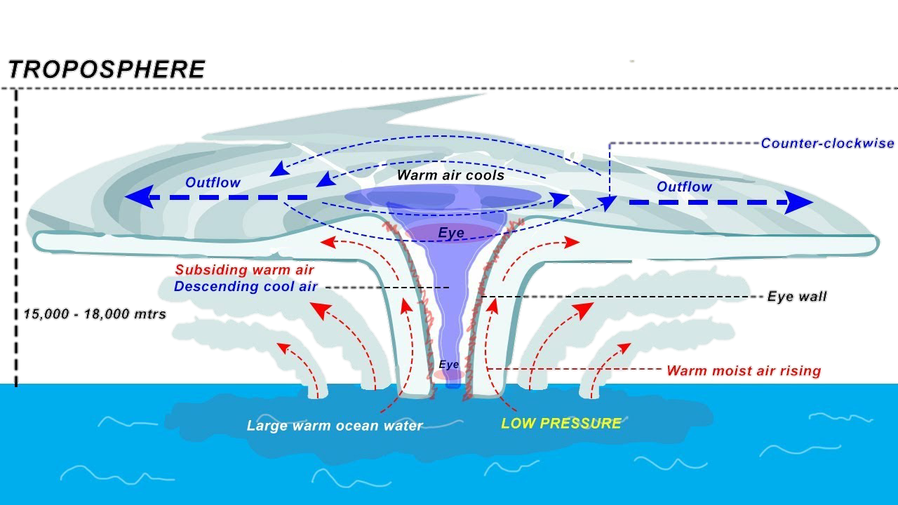
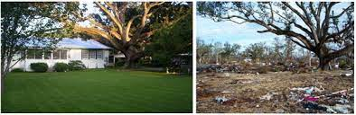
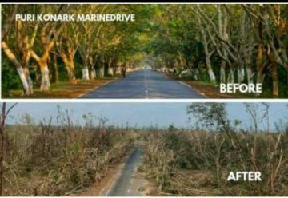

• A cyclone is an intense low pressure center into which wind converges.
• This formation is more often common in the tropical than in the temperature region originally over warm water the cyclone develops and moves towards land causing floods storm surges and storm tides.
• Cyclones are known as hurricanes and typhoons hurricanes occurs in the Atlantic ocean and typhoons in the Pacific Ocean.
• States the coastal states of India such as West Bengal Orissa Andhra Pradesh Telangana and Tamil Nadu are vulnerable to cyclones originating from in the Bay of Bengal.
• a cyclone is a large air mass that rotates around a strong center of low atmospheric pressure, counterclockwise in the Northern Hemisphere and clockwise in the Southern Hemisphere as viewed from above.
• Cyclones are characterized by inward-spiraling winds that rotate about a zone of low pressure.
• As a cyclone approaches, the wind and rain gradually increases over several hours.
• Winds caused by cyclones are powerful enough to break large trees, roll over sea containers, and blow away unsecured caravans, garden sheds and poorly constructed roofed patios.
Before And After Effects Of Earthquakes
• Strong winds associated with cyclones can cause extensive property damage and turn loose items into wind-borne debris that cause further building damage.
• Slow moving cyclones can take many hours to move past a particular location, causing extreme wind and rain that can last up to 12 hours.
• Typhoon Tip, known in the Philippines as Typhoon Warling, was the largest and most intense tropical cyclone ever recorded.
• In general, the coastal districts of West Bengal, Orissa, Andhra Pradesh and Tamil Nadu are more prone and are in the high to very high category.
• Its diameter is typically around 200 to 500 km, but can reach 1000 km.
Before And After Effects Of Earthquakes
• Over the past 50 years, 1942 disasters have been attributed to tropical cyclones, which killed 779 324 people and caused US$ 1 407.6 billion in economic losses – an average of 43 deaths and US$ 78 million in damages every day.
• Meteorologists around the world use modern technology, such as satellites, weather radars and computers, to track tropical cyclones as they develop.
• It is surrounded by rain bands which also have fast winds. Tropical cyclones are powered by warm, humid ocean air. When they go onto land, they weaken. They die when they spend a long time over land or cool ocean water.
Steps that can be useful in minimizing the damage from a cyclone are:-
• Turn off all electricity, gas and water; unplug all appliances. Lock your doors. Make sure everyone in your household is wearing strong shoes and suitable clothing. Take your emergency survival kit; follow your evacuation plan.
• People in the cyclone prone region must be alert and keep a track of warning announcement and instruction from meteorologic department.
• Keep track of disaster warning system television News Radio broadcast.
• Such area should have a preconcerted shelter known for to everyone's emergency gate food water medicine should be kept ready in a waterproof bag.
• Coastal vegetation such as mangrove forest must be conserved as these act windbreak reduce the impact of waves.